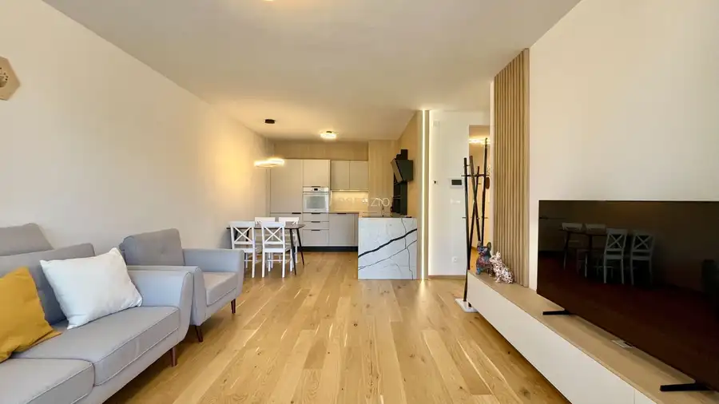
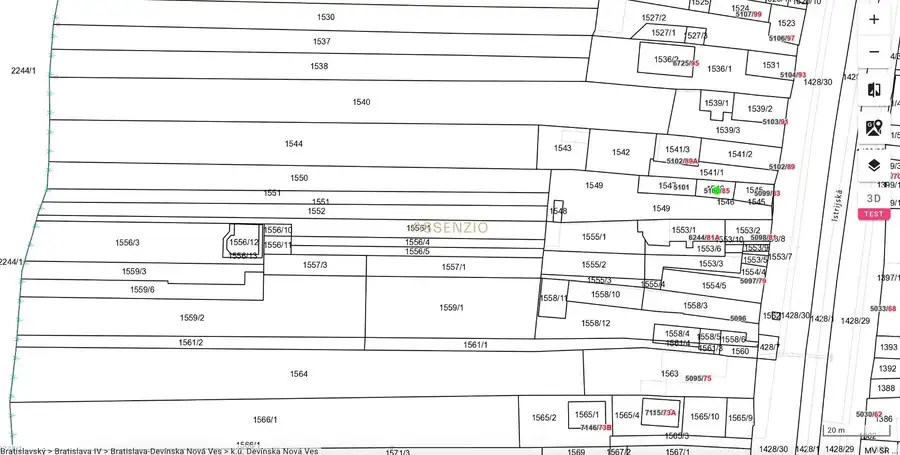
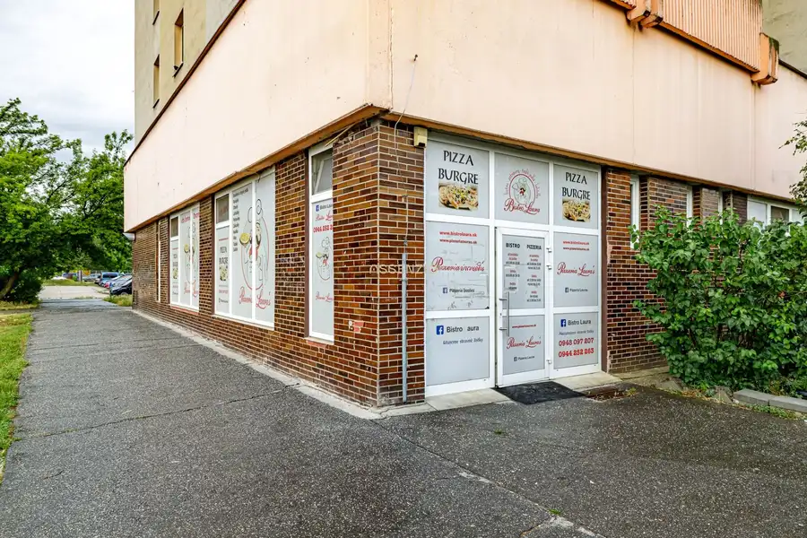

Prenájom-1 izbový by-36 m2-ulica krásnohorská-Petržalka
Petržalka, Bratislava
- Dispozícia1-izbový
- Plocha36 m²
- Poschodie5. z 12
- Stavpo rekonštrukcii
- Vlastníctvoosobné
O nehnuteľnosti
Assenzio ponúka na prenájom 1-izbový byt s rozlohou 36 m², ktorý sa nachádza na 5. poschodí z 12. na Krásnohorskej ulici. Byt je kompletne zrekonštruovaný, výborná lokalita.
Dispozícia bytu:
• Vstupná chodba s odkladacím priestorom a klimatizáciou
• Kúpeľňa s vaňou, WC a práčkou
• Kuchyňa so zabudovanými spotrebičmi ( chladnička, umývačka riadu, sporák, elektrická rúra)
• Samostatná izba
Vybavenie a doplnkové priestory:
• K bytu prislúcha pivnica
• Spoločné priestory
Vybavenie bytu:
Byt prešiel kompletnou rekonštrukciou v roku 2024. Byt sa ponúka nezariadený, v prípade záujmu je zariadenie k dispozícii, záleží od potreby záujemcu.
V byte sa nachádza klimatizácia, nová kuchyňa so vstavanými spotrebičmi, ako aj nová kúpeľňa s WC a práčkou. Bytový dom je zateplený, nový výťah, vchodové dvere. Bezproblémové parkovanie v okolí bytového bez parkovacej politiky.
Výborná lokalita a dostupnosť:
Byt sa nachádza v lokalite s vynikajúcou občianskou vybavenosťou a dopravnou dostupnosťou. V pešej. Okolie ponúka širokú škálu obchodov vrátane Tesco Express, Terno a Lidl. Pre športovcov a milovníkov prírody je veľkou výhodou blízkosť hrádze, ktorá je ideálna na beh, cyklistiku a prechádzky. Parkovanie je bezproblémové a dostupné počas celého dňa bez nutnosti parkovacej karty.
LOKALITA:
Tiché prostredie, s výbornou dostupnosťou. V blízkosti je zástavka MHD, potraviny, nemocnica, škola-škôlka, Draždiak, cyklotrasa.
CENA:
Nájom: 440,-€/ mesiac +réžia + energie: 160,-+90,-/ 690,-€ kompletná cena za nájom s energiami
Obhliadky sú možné od 1.10.2026.
Parametre
| Celková rozloha | 36 m² |
|---|---|
| Úžitková plocha | 36 m² |
| Poschodie | 5/vyššie poschodie |
| Počet poschodí | 12 |
| Počet izieb | 1 |
| Vlastníctvo | osobné |
| Stav | po rekonštrukcii |
| Odvoz odpadu | áno - separovaný |
| Plyn | áno |
| Internet | optika |
| Kúpeľňa | vaňa |
| Vykurovanie | spoločné – vlastná kotolňa |
| Balkón | nie |
| Pivnica | áno |
| Výťah | áno |
| Parkovanie | vonkajšie |
| Postavené z | tehla |
| Zariadenie | nezariadený |
| Zateplený objekt | áno |
| Klimatizácia | áno |
| Káblová televízia | áno |
| Energetický certifikát | nie |
| Bezbariérový prístup | áno |
| Okná | plastové |
| Dátum zverejnenia | 11. 3. 2025 |
Kde to je
Mohlo by Vás zaujímať

Byt10 382 081 €Predaj-2 izbový byt-59m2-projekt zwirn 3 - Ružinov Ružinov, Bratislava 2-izbový54.15 m²2. podlažie Ponúkame na predaj : 2-izbový byt ZWIRN 3 rozloha bytu 54,15m2, lodžia 4,95m2 s vysokokvalitným kuchynským zariadením, ktoré zabezpečila firma SOL. V…
Pozemok5 Cena dohodouPROPERTY ponúka na predaj pozemok na Istrijskej ulici Devínska Nová Ves, Bratislava 3142 m² ASSENZIO PROPERTY ponúka na predaj pozemok na ulici Istrijská v lokalite Devínska Nová Ves Ponúkame na predaj pozemok s možnosťou vystavania…
Nebytové priestory10 Cena dohodouPonúka na predaj GASTRO PRIESTOR v Devínskej Novej Vsi Devínska Nová Ves, Bratislava 303 m² ASSENZIO PROPERTY ponúka na predaj zabehnutý priestor, vo výmere 303m2 využívaný ako „ Kantína“, vhodný na pokračovanie v gastro prevádzke, poprípade…